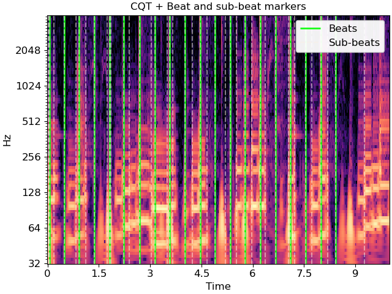

librosa.segment.subsegment¶
- librosa.segment.subsegment(data, frames, *, n_segments=4, axis=- 1)[source]¶
Sub-divide a segmentation by feature clustering.
Given a set of frame boundaries (
frames), and a data matrix (data), each successive interval defined byframesis partitioned inton_segmentsby constrained agglomerative clustering.Note
If an interval spans fewer than
n_segmentsframes, then each frame becomes a sub-segment.- Parameters
- datanp.ndarray
Data matrix to use in clustering
- framesnp.ndarray [shape=(n_boundaries,)], dtype=int, non-negative]
Array of beat or segment boundaries, as provided by
librosa.beat.beat_track,librosa.onset.onset_detect, oragglomerative.- n_segmentsint > 0
Maximum number of frames to sub-divide each interval.
- axisint
Axis along which to apply the segmentation. By default, the last index (-1) is taken.
- Returns
- boundariesnp.ndarray [shape=(n_subboundaries,)]
List of sub-divided segment boundaries
See also
agglomerativeTemporal segmentation
librosa.onset.onset_detectOnset detection
librosa.beat.beat_trackBeat tracking
Notes
This function caches at level 30.
Examples
Load audio, detect beat frames, and subdivide in twos by CQT
>>> y, sr = librosa.load(librosa.ex('choice'), duration=10) >>> tempo, beats = librosa.beat.beat_track(y=y, sr=sr, hop_length=512) >>> beat_times = librosa.frames_to_time(beats, sr=sr, hop_length=512) >>> cqt = np.abs(librosa.cqt(y, sr=sr, hop_length=512)) >>> subseg = librosa.segment.subsegment(cqt, beats, n_segments=2) >>> subseg_t = librosa.frames_to_time(subseg, sr=sr, hop_length=512)
>>> import matplotlib.pyplot as plt >>> fig, ax = plt.subplots() >>> librosa.display.specshow(librosa.amplitude_to_db(cqt, ... ref=np.max), ... y_axis='cqt_hz', x_axis='time', ax=ax) >>> lims = ax.get_ylim() >>> ax.vlines(beat_times, lims[0], lims[1], color='lime', alpha=0.9, ... linewidth=2, label='Beats') >>> ax.vlines(subseg_t, lims[0], lims[1], color='linen', linestyle='--', ... linewidth=1.5, alpha=0.5, label='Sub-beats') >>> ax.legend() >>> ax.set(title='CQT + Beat and sub-beat markers')
